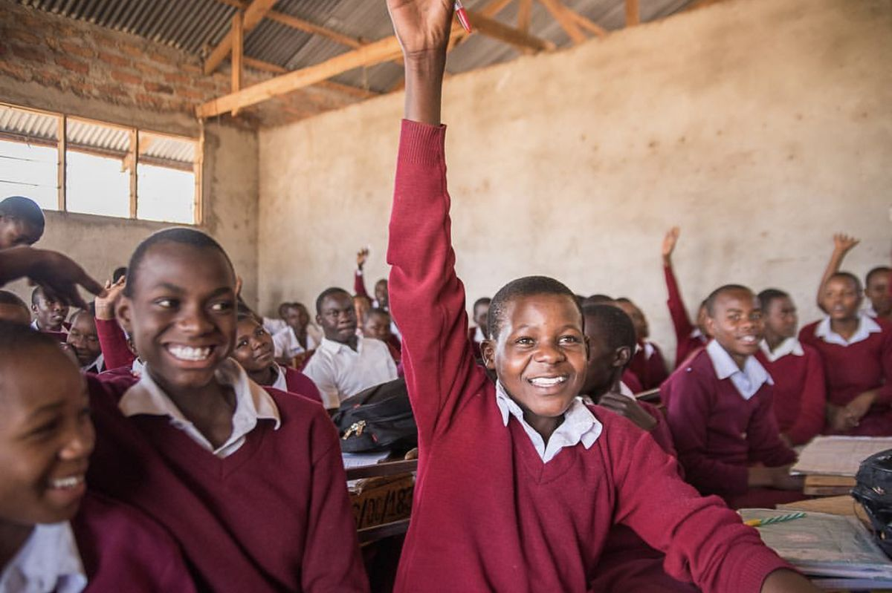
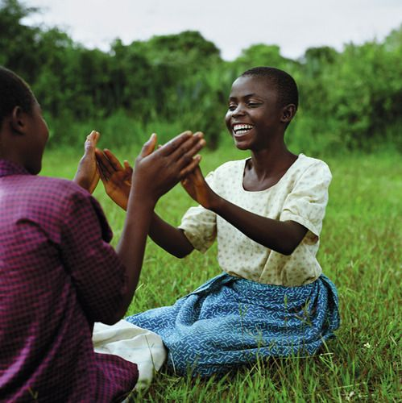
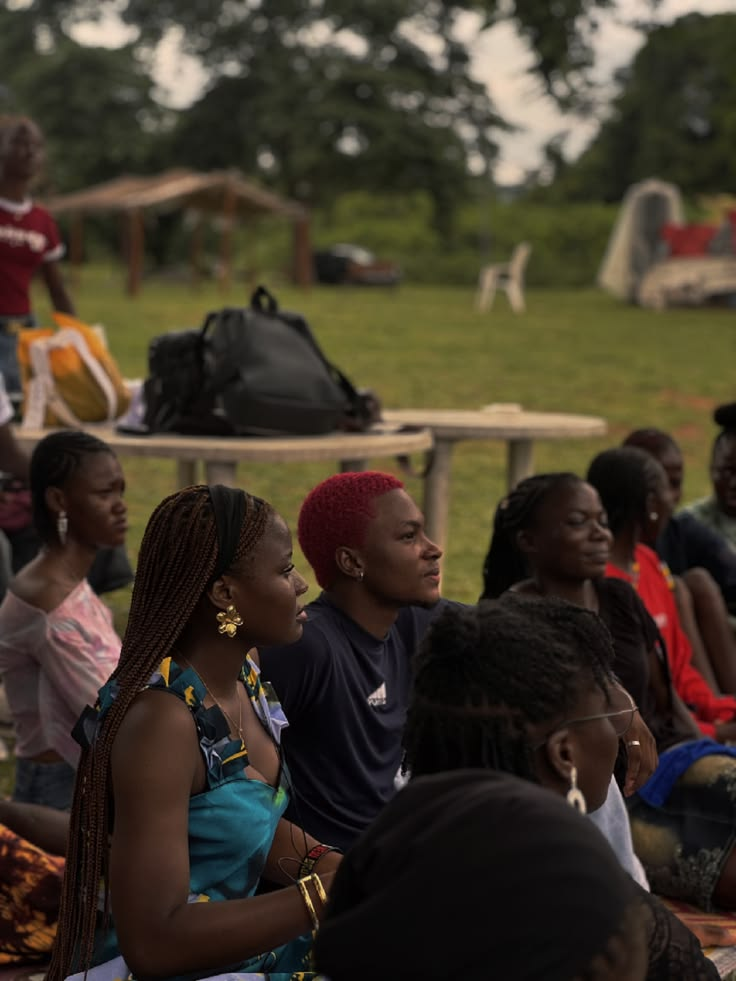

Growing together, creating change together.

The Leafspire community is the people who learn, share ideas and show up for their neighbourhoods. You can join in a lot, or a little.
See how people take partWho is in the community?
People with different interests, skills and experiences, who share one thing: they care about the places they live and want to help them thrive.
You do not need a qualification, a CV of volunteering, or a particular background. You just need to be curious and willing to take part in your own way.
Young people, students, young professionals, volunteers, local change agents, innovators, people who care about nature, health and wellbeing, civic-minded neighbours, partners and supporters.



Five ways to be part of it
None of these is a test, and you can move between them. Start wherever feels natural.
Take part
Join community activities, environmental action, outreach and campaigns when they come up.
See our programsBring an idea
Spotted a need in your neighbourhood, or have an activity in mind? Tell us about it.
Start a conversationVolunteer
Offer your time, skills and energy to the Leafspire activities that fit you.
See how to volunteerCollaborate
Schools, institutions, organisations and community groups can explore working with us.
Get in touchConnect
Follow our work, watch, share and stay close through our online spaces.
Find us online
Find us online
Our digital community is where you can see what we are up to, watch, share and say hello, wherever you are.
The WhatsApp Community Channel
A direct line into the Leafspire community, for updates and conversations as they happen.
Join on WhatsAppYou do not need it all figured out.
Young people, students, volunteers, neighbours, people with ideas, collaborators and supporters.
Say hello, pick a way in, and see where it goes.